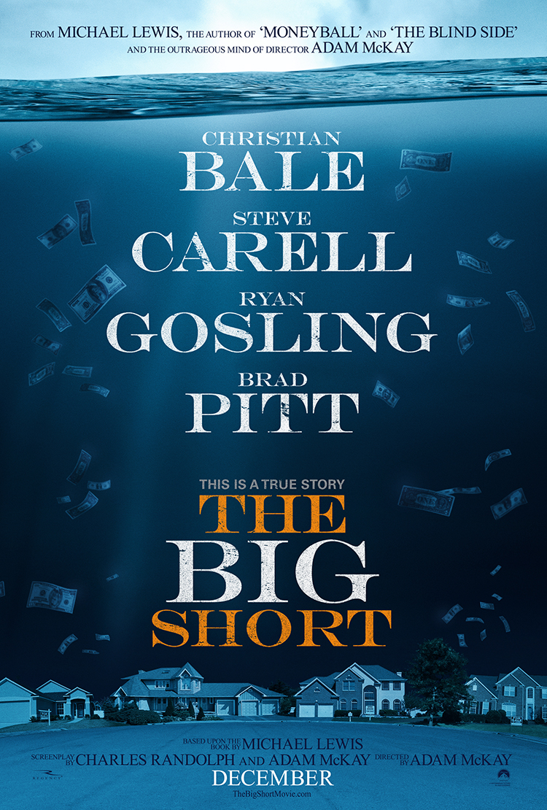

Pook's Pick

Hit or Shit

The Big Short

Bale, Gosling, Carrell, Pitt. A lot of big names are in “The Big Short,” director Adam Mckay’s (”The Other Guys,” “Anchorman”) first serious movie. Or is it? “The Big Short” offers us a comedic look at one of the most devastating financial crises in recent memory, but does such a serious matter deserve comedy? Well, the movie isn’t a straight comedy, and the comedic nature does help the audience follow what’s going on and swallow the overall darkness of the subject. The movie flows nicely, with a rapid, furious pace. The director and writers help explain all of the Wall Street lingo, so don’t be worried if you’ve never taken an economics class. You won’t be lost. The actors all do a GREAT job, with Carrell and Bale being bright stars in an ensemble cast. Gosling and Pitt aren’t given much to work with but do just fine in their roles. One thing most people won’t like is the tonal shifts of the movie. One second we’re having a fourth wall breaking explanation of what exactly a short is, and the next we’re given a Haruki Murakami quote to ponder. The movie is mostly all laughs, but underneath it all is a very dark ending bubbling ever closer to the surface, which is just fine with me. Life is known for tonal shifts, isn’t it? “The Big Short” offers a FAR superior look at Wall Street than 2013’s brofest fratcore overlong reparative “Wolf of Wall Street”. Instead of hookers’ assholes and the inside of noses,we are subjected to an examination of greed and overall lack of oversight that allowed America’s most stable market to crash the world’s economy around it. If you want a semi-serious, easy going yet overall challenging picture then “The Big Short” is for you. Not too funny, not too serious, and it offers a dark plot in an easy-to-swallow pill. Highlights: Phenomenal acting, rapid pace, a serious message in an accessible way Lowlights: Tonal shifts might disrupt some viewers, a fair amount of jokes miss, Pitt and Gosling don’t do all that much.
